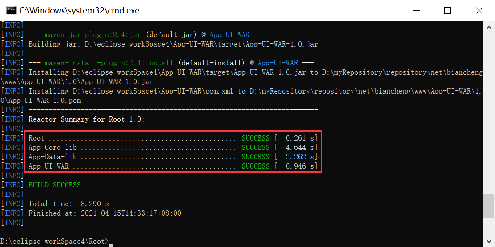

Maven聚合
在实际的开发过程中，我们所接触的项目一般都由多个模块组成。在构建项目时，如果每次都按模块一个一个地进行构建会十分得麻烦，Maven 的聚合功能很好的解决了这个问题。
与父模块相似，聚合模块的打包方式（packaging）也是 pom，用户可以在其 POM 中通过 modules 下的 module 子元素来添加需要聚合的模块的目录路径。
修改 Root 模块 POM 的配置如下。
打开命令行窗口，跳转到 Root 模块所在目录，执行以下 Maven 命令，对 Root 进行构建。
命令直接结果如下图。
聚合模块在构建时，Maven 会先解析聚合模块的 POM、分析需要构建的模块，并根据这些模块之间的关系计算出构建顺序，然后根据这个顺序依次构建各个模块。
构建完成后输出的是一个项目构建的小结报告，该报告中包括各个模块构建成功与否、构建花费的时间、以及整个构建构成所花费的时间等信息。
Maven 的继承和聚合的目的不同，继承的目的是为了消除 POM 中的重复配置，聚合的目的是为了方便快速的构建项目。
对于继承中的父模块来说，它跟本不知道那些模块继承了它，但子模块都知道自己的父模块是谁。
对于聚合模块来说，它知道哪些模块被聚合了，但那些被聚合的模块根本不知道聚合模块的存在。
两者在结构和形式上还是有一定的共同点的，最直观的就是两者的打包方式都是 pom，两者除了 POM 外都没有实际的代码内容。
聚合
使用 Maven 聚合功能对项目进行构建时，需要在该项目中额外创建一个的聚合模块，然后通过这个模块构建整个项目的所有模块。聚合模块仅仅是帮助聚合其他模块的工具，其本身并无任何实质内容，因此聚合模块中只有一个 POM 文件，不像其他的模块一样包含 src/main/java、src/test/java 等多个目录。与父模块相似，聚合模块的打包方式（packaging）也是 pom，用户可以在其 POM 中通过 modules 下的 module 子元素来添加需要聚合的模块的目录路径。
修改 Root 模块 POM 的配置如下。
<project xmlns="http://maven.apache.org/POM/4.0.0"
xmlns:xsi="http://www.w3.org/2001/XMLSchema-instance"
xsi:schemaLocation="http://maven.apache.org/POM/4.0.0 https://maven.apache.org/xsd/maven-4.0.0.xsd">
<modelVersion>4.0.0</modelVersion>
<groupId>net.biancheng.www</groupId>
<artifactId>Root</artifactId>
<version>1.0</version>
<!--定义的父类pom.xml 打包类型使pom -->
<packaging>pom</packaging>
<properties>
<!-- 定义一些属性 -->
<project.build.sourceEncoding>UTF-8</project.build.sourceEncoding>
<log4j.version>1.2.17</log4j.version>
<junit.version>4.9</junit.version>
<system.version>1.0</system.version>
<mysql.connector.version>5.1.18</mysql.connector.version>
<c3p0.version>0.9.1</c3p0.version>
</properties>
<!--dependencyManagement 标签用于控制子模块的依赖版本等信息 -->
<!-- 该标签只用来控制版本，不能将依赖引入 -->
<dependencyManagement>
<dependencies>
<dependency>
<groupId>log4j</groupId>
<artifactId>log4j</artifactId>
<!--引用的properties标签中定义的属性 -->
<version>${log4j.version}</version>
</dependency>
<dependency>
<groupId>junit</groupId>
<artifactId>junit</artifactId>
<!--引用的properties标签中定义的属性 -->
<version>${junit.version}</version>
<!-- <scope>test</scope> -->
</dependency>
<dependency>
<groupId>mysql</groupId>
<artifactId>mysql-connector-java</artifactId>
<!--引用的properties标签中定义的属性 -->
<version>${mysql.connector.version}</version>
<scope>runtime</scope>
</dependency>
<dependency>
<groupId>c3p0</groupId>
<artifactId>c3p0</artifactId>
<!--引用的properties标签中定义的属性 -->
<version>${c3p0.version}</version>
</dependency>
</dependencies>
</dependencyManagement>
<!--添加需要聚合的模块-->
<modules>
<module>../App-Core-lib</module>
<module>../App-Data-lib</module>
<module>../App-UI-WAR</module>
</modules>
</project>
打开命令行窗口，跳转到 Root 模块所在目录，执行以下 Maven 命令，对 Root 进行构建。
mvn clean install
命令直接结果如下图。

图1：Maven 聚合构建
图1：Maven 聚合构建
聚合模块在构建时，Maven 会先解析聚合模块的 POM、分析需要构建的模块，并根据这些模块之间的关系计算出构建顺序，然后根据这个顺序依次构建各个模块。
构建完成后输出的是一个项目构建的小结报告，该报告中包括各个模块构建成功与否、构建花费的时间、以及整个构建构成所花费的时间等信息。
继承和聚合的关系
在实际的项目中，一个模块往往既是聚合模块又是其他项目的父模块，那么 Maven 的继承和聚合的关系是如何的呢？Maven 的继承和聚合的目的不同，继承的目的是为了消除 POM 中的重复配置，聚合的目的是为了方便快速的构建项目。
对于继承中的父模块来说，它跟本不知道那些模块继承了它，但子模块都知道自己的父模块是谁。
对于聚合模块来说，它知道哪些模块被聚合了，但那些被聚合的模块根本不知道聚合模块的存在。
两者在结构和形式上还是有一定的共同点的，最直观的就是两者的打包方式都是 pom，两者除了 POM 外都没有实际的代码内容。
关注公众号「站长严长生」，在手机上阅读所有教程，随时随地都能学习。内含一款搜索神器，免费下载全网书籍和视频。

微信扫码关注公众号